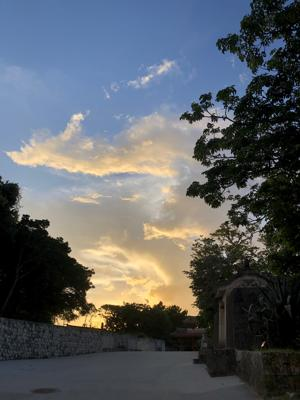
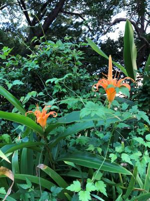
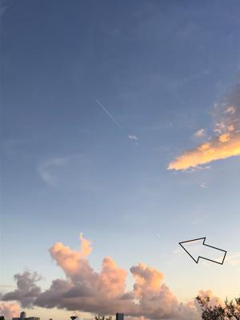

うるがいの話 ある日
最新:うるがいとは 前提知識です
カニの画像をクリックすると『うるがいの話』サイトを表示します|
|
うるがい(ｳﾙｶﾞｲ urugai)とは、『もずくがに』の名前でとても大きくなります。 |
|---|---|
|
|
たながー（ﾀﾅｶﾞｰtanagaa）とは手長えびのことで、何種類かあり大きいのは車 エビぐらいになります。 |

|
ぶながー(bunagaa)とは、赤い髪の毛、赤い身体、そして身長は１ｍ２０ｃｍ ぐらい、川の蟹を食べているの目撃された。場所は沖縄県国頭郡大宜味村のと ある村僕の隣近所に住んでいる爺さんから、聞いた話です。 |
2021年09月27日 (月）
16:53
  
【チャングム】の事を一言、書こうと思っていたが、忘れていた。１８年も前
に見た筈だが、覚えていたのは、悪役のチョン最高尚宮（チェゴサングン）が
赤いリボンを追いかけるシーンだけだった。記憶というものはこの程度である
【チャングム】を優先したため、溜まっていた先週の朝ドラを見終える。『音
楽は力』という場面があった、うーんなるほどそうかも。ところで、懐かしさ
から始めた『禁じられた遊び』、まだ弾けません！。この曲は前半と後半に別
れており、前半は１週間ほどで何とか弾けた。参考にしたユーチューブの小暮
浩史講師が後半の箇所を説明するとき、『前半の出だしの簡単さに比べて、後
半はとっても難しいと思いますけれども（ここで、少し鼻で笑う！）、めぜず
に最後までゆっくり解説していきますので・・・』と、いきなり４フレットに
渡って弦を押さえるところから始まる。左手の人差し指と小指が、また裂きの
状態になるくっ！、手の甲の筋が痛い、そして最高の難関『拡張ボジッション
』という箇所では、５フレット間を抑えなければいけない（勘弁して！）とい
うとんでもない曲である。数学の先生が、（わざわざ）宿舎で披露したのは俺
はマスタしたんだこの曲を！と言いたかったのでしょうと今さらながら推測す
る。ネットによると
その１
禁じられた遊びは、ギターを始めて半年とか１年でマスターできるとかよく聞
くが、自分の経験上、半年で弾けるようなレベルの曲とはとうてい思えない。
その２
どう考えてもある程度の基礎が身についていないと、箸にも棒にも掛からない
からだ。なので、期間でいうとクラシックギターを１年くらいは基礎をみっち
りと練習してきた人が初めて取り組む曲だと思う。
なるほど、無謀な事に挑戦しているかも。でも、ま、時間はたっぷりあるし前
半弾けた時はドーパミンばんばん出てたし。鼻で笑っていた小暮浩史講師も癪
だし・・。JINSEI STORIES滞仏日記の辻仁成がハマっていたラベルのボレロ
をヒントにＴＡＢを捜していたら、なぜか懐かしジョン・デンバーのカントリ
ー・ロードのＴＡＢがあった。昨日から、楽譜ソフトに打ち込み今日出来上が
る。そして、登録した楽譜ソフトの演奏に合わせ、比較的な簡単コード弾きを
合わせて演奏する。音楽は力、ん。辻仁成さんの演奏に似た、ボレロのＴＡＢ
も探したのでそのうち、演奏してみることとする（ただし、ギターを叩くとこ
ろは恥ずかしいので無理）。